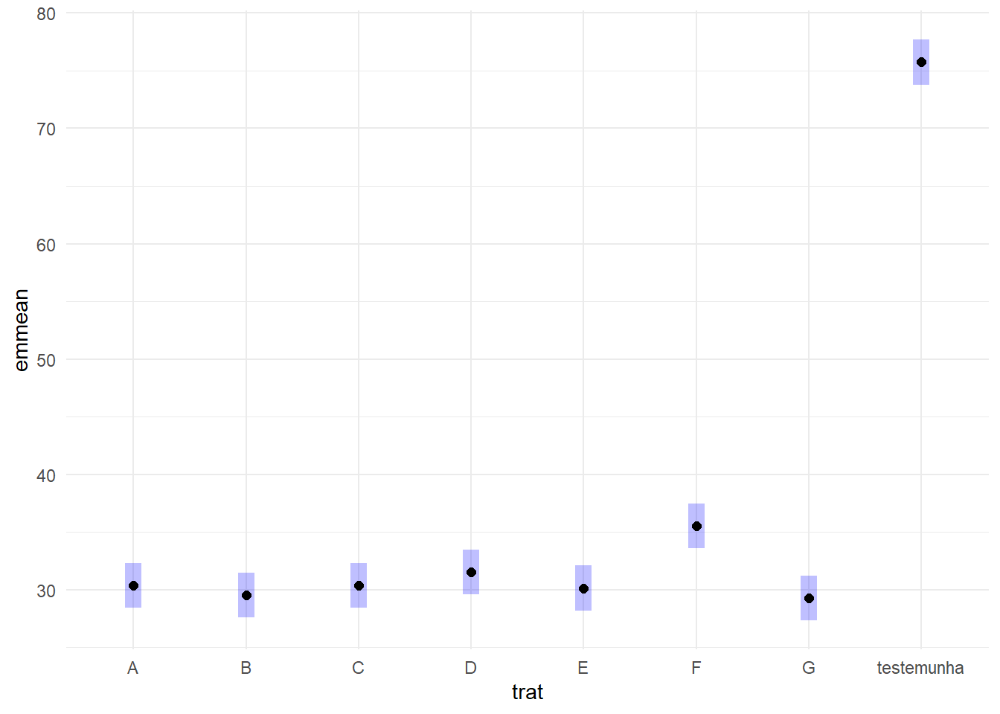

Warning: package 'survival' was built under R version 4.2.3
Carregando pacotes exigidos: TH.data
Warning: package 'TH.data' was built under R version 4.2.3
Carregando pacotes exigidos: MASS
Warning: package 'MASS' was built under R version 4.2.3
Attaching package: 'MASS'
The following object is masked from 'package:dplyr':
select
Attaching package: 'TH.data'
The following object is masked from 'package:MASS':
geyser
library(multcompView)
Warning: package 'multcompView' was built under R version 4.2.3
cld(means_fung)
trat emmean SE df lower.CL upper.CL .group
G 29.2 0.941 23 27.3 31.2 1
B 29.5 0.941 23 27.6 31.4 1
E 30.1 0.941 23 28.2 32.1 1
C 30.4 0.941 23 28.4 32.3 1
A 30.4 0.941 23 28.4 32.3 1
D 31.5 0.941 23 29.6 33.4 12
F 35.5 0.941 23 33.6 37.4 2
testemunha 75.8 0.941 23 73.8 77.7 3
Confidence level used: 0.95
P value adjustment: tukey method for comparing a family of 8 estimates
significance level used: alpha = 0.05
NOTE: If two or more means share the same grouping symbol,
then we cannot show them to be different.
But we also did not show them to be the same.
plot(means_fung)+coord_flip()+theme_minimal()

Parcela subdividida (split-plot)
milho <-read_excel("dados-diversos.xlsx", "milho")# Base R# DBC# model <- aov(Response ~ Block*WholePlotFactor*SubPlotFactor + Error(Block/WholePlotFactor/SubPlotFactor), data = mydata)aov_milho_bloco <-aov(index ~factor(block) + hybrid*method +Error(factor(block)/hybrid/method), data = milho)summary(aov_milho_bloco)
Error: factor(block)
Df Sum Sq Mean Sq
factor(block) 3 592.2 197.4
Error: factor(block):hybrid
Df Sum Sq Mean Sq F value Pr(>F)
hybrid 5 974.2 194.84 3.14 0.0389 *
Residuals 15 930.9 62.06
---
Signif. codes: 0 '***' 0.001 '**' 0.01 '*' 0.05 '.' 0.1 ' ' 1
Error: factor(block):hybrid:method
Df Sum Sq Mean Sq F value Pr(>F)
method 1 79.61 79.61 4.726 0.0433 *
hybrid:method 5 265.28 53.06 3.150 0.0324 *
Residuals 18 303.18 16.84
---
Signif. codes: 0 '***' 0.001 '**' 0.01 '*' 0.05 '.' 0.1 ' ' 1
# Using lme4 library# Load lme4 librarylibrary(lme4)
Warning: package 'lme4' was built under R version 4.2.3
Carregando pacotes exigidos: Matrix
Warning: package 'Matrix' was built under R version 4.2.3
Attaching package: 'Matrix'
The following objects are masked from 'package:tidyr':
expand, pack, unpack
# using blocksmilho$block <-as.factor(milho$block)mix2 <-lmer(sqrt(index) ~ block + hybrid*method + (1|block/hybrid), data = milho)library(car)
Warning: package 'car' was built under R version 4.2.3
Carregando pacotes exigidos: carData
Attaching package: 'car'
The following object is masked from 'package:dplyr':
recode
The following object is masked from 'package:purrr':
some
method = pin:
hybrid emmean SE df lower.CL upper.CL .group
BG7049H 4.40 1.17 5356 2.10 6.71 1
30K64 4.50 1.17 5356 2.20 6.81 1
30F53 YH 4.95 1.17 5356 2.65 7.25 12
30F53 HX 5.00 1.17 5356 2.69 7.30 12
30S31YH 5.63 1.17 5356 3.33 7.93 12
30S31H 6.10 1.17 5356 3.79 8.40 2
method = silk:
hybrid emmean SE df lower.CL upper.CL .group
BG7049H 4.37 1.17 5356 2.07 6.67 1
30K64 4.61 1.17 5356 2.31 6.91 1
30F53 HX 4.94 1.17 5356 2.64 7.25 1
30F53 YH 5.10 1.17 5356 2.80 7.41 1
30S31H 5.13 1.17 5356 2.83 7.43 1
30S31YH 5.14 1.17 5356 2.84 7.44 1
Results are averaged over the levels of: block
Degrees-of-freedom method: kenward-roger
Results are given on the sqrt (not the response) scale.
Confidence level used: 0.95
Note: contrasts are still on the sqrt scale
P value adjustment: tukey method for comparing a family of 6 estimates
significance level used: alpha = 0.05
NOTE: If two or more means share the same grouping symbol,
then we cannot show them to be different.
But we also did not show them to be the same.